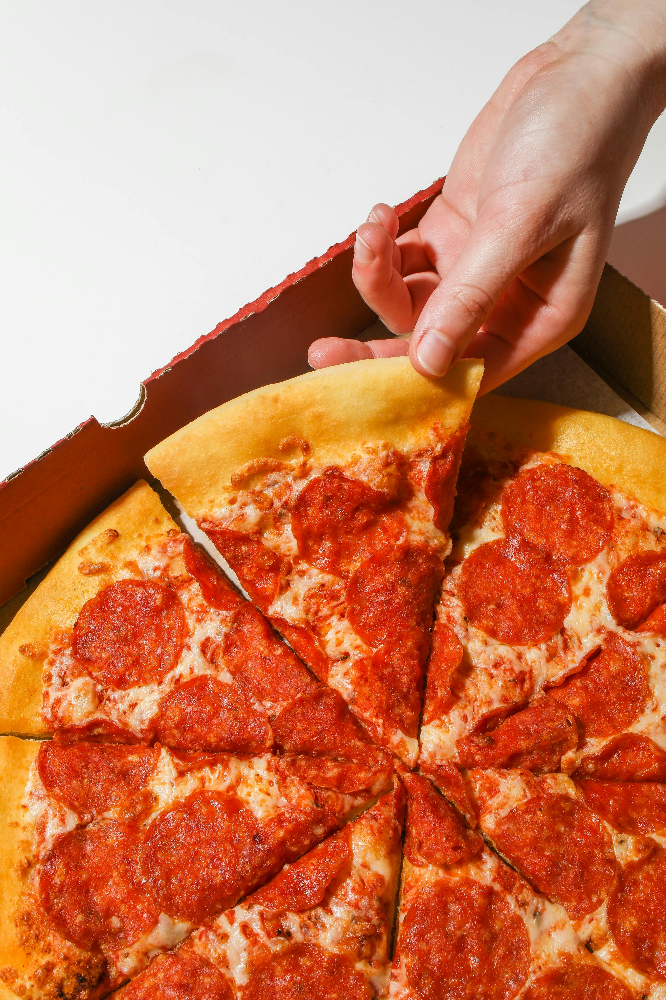

Pizza Recipe

Description.
Pizza is a beloved Italian dish made with a thin, crispy crust, topped with rich tomato sauce, melted cheese, and your favorite toppings. Baked to perfection, it's a favorite comfort food for all ages.
Ingredients
- Pizza dough
- Tomato sauce
- Mozzarella cheese
- Olive oil
- Garlic (optional)
- Dried oregano
- Toppings of choice (e.g., pepperoni, mushrooms, bell peppers)
- Salt
- Black pepper
Preparation Steps
- Preheat your oven to 475°F (245°C).
- Roll out the pizza dough on a floured surface to your desired thickness.
- Transfer the dough to a baking sheet or pizza stone.
- Spread tomato sauce evenly over the dough.
- Sprinkle mozzarella cheese over the sauce.
- Add your preferred toppings.
- Drizzle a little olive oil and sprinkle oregano, salt, and pepper on top.
- Bake for 10–15 minutes or until the crust is golden and the cheese is bubbly.
- Remove from oven, let it cool slightly, then slice and serve.